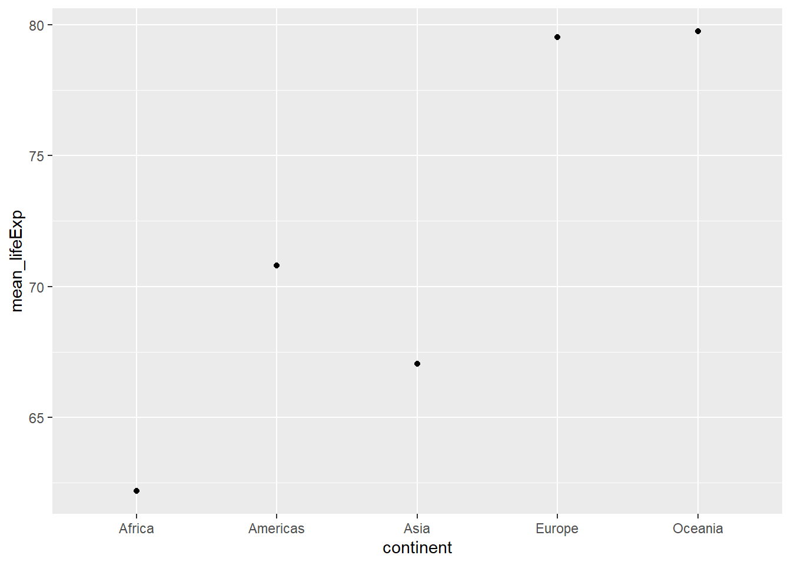

Code
mean(gapminder$gdpPercap[gapminder$continent == "Africa"])[1] 2193.755Code
mean(gapminder$gdpPercap[gapminder$continent == "Americas"])[1] 7136.11Code
mean(gapminder$gdpPercap[gapminder$continent == "Asia"])[1] 7902.15Exercise time: 55 minutes
Questions
Objectives
dplyr.group_by() and summarize() can be combined to summarize datasets.Manipulation of data frames means many things to many researchers: we often select certain observations (rows) or variables (columns), we often group the data by a certain variable(s), or we even calculate summary statistics. We can do these operations using the normal base R operations:
mean(gapminder$gdpPercap[gapminder$continent == "Africa"])[1] 2193.755mean(gapminder$gdpPercap[gapminder$continent == "Americas"])[1] 7136.11mean(gapminder$gdpPercap[gapminder$continent == "Asia"])[1] 7902.15But this isn’t very nice because there is a fair bit of repetition. Repeating yourself will cost you time, both now and later, and potentially introduce some nasty bugs.
dplyr packageLuckily, the dplyr package provides a number of very useful functions for manipulating data frames in a way that will reduce the above repetition, reduce the probability of making errors, and probably even save you some typing. As an added bonus, you might even find the dplyr grammar easier to read.
dplyr package belongs to a broader family of opinionated R packages designed for data science called the “Tidyverse”. These packages are specifically designed to work harmoniously together. Some of these packages will be covered along this course, but you can find more complete information here: https://www.tidyverse.org/.
Here we’re going to cover 5 of the most commonly used functions as well as using pipes (%>%) to combine them.
select()filter()group_by()summarize()mutate()If you have have not installed this package earlier, please do so:
# install.packages('dplyr')Now let’s load the package:
library("dplyr")If, for example, we wanted to move forward with only a few of the variables in our data frame we could use the select() function. This will keep only the variables you select.
year_country_gdp <- select(gapminder, year, country, gdpPercap)
If we want to remove one column only from the gapminder data, for example, removing the continent column.
smaller_gapminder_data <- select(gapminder, -continent)If we open up year_country_gdp we’ll see that it only contains the year, country and gdpPercap. Above we used ‘normal’ grammar, but the strengths of dplyr lie in combining several functions using pipes. Since the pipes grammar is unlike anything we’ve seen in R before, let’s repeat what we’ve done above using pipes.
year_country_gdp <- gapminder %>%
select(year, country, gdpPercap)To help you understand why we wrote that in that way, let’s walk through it step by step. First we summon the gapminder data frame and pass it on, using the pipe symbol %>%, to the next step, which is the select() function. In this case we don’t specify which data object we use in the select() function since in gets that from the previous pipe. Fun Fact: There is a good chance you have encountered pipes before in the shell. In R, a pipe symbol is %>% while in the shell it is | but the concept is the same!
In Chapter 4 we covered how you can rename columns with base R by assigning a value to the output of the names() function. Just like select, this is a bit cumbersome, but thankfully dplyr has a rename() function.
Within a pipeline, the syntax is rename(new_name = old_name). For example, we may want to rename the gdpPercap column name from our select() statement above.
tidy_gdp <- year_country_gdp %>%
rename(gdp_per_capita = gdpPercap)
head(tidy_gdp)| year | country | gdp_per_capita |
|---|---|---|
| 1952 | Afghanistan | 779.4453 |
| 1957 | Afghanistan | 820.8530 |
| 1962 | Afghanistan | 853.1007 |
| 1967 | Afghanistan | 836.1971 |
| 1972 | Afghanistan | 739.9811 |
| 1977 | Afghanistan | 786.1134 |
If we now want to move forward with the above, but only with European countries, we can combine select and filter
year_country_gdp_euro <- gapminder %>%
filter(continent == "Europe") %>%
select(year, country, gdpPercap)If we now want to show life expectancy of European countries but only for a specific year (e.g., 2007), we can do as below.
europe_lifeExp_2007 <- gapminder %>%
filter(continent == "Europe", year == 2007) %>%
select(country, lifeExp)Write a single command (which can span multiple lines and includes pipes) that will produce a data frame that has the African values for lifeExp, country and year, but not for other Continents. How many rows does your data frame have and why?
year_country_lifeExp_Africa <- gapminder %>%
filter(continent == "Africa") %>%
select(year, country, lifeExp)As with last time, first we pass the gapminder data frame to the filter() function, then we pass the filtered version of the gapminder data frame to the select() function. Note: The order of operations is very important in this case. If we used ‘select’ first, filter would not be able to find the variable continent since we would have removed it in the previous step.
Now, we were supposed to be reducing the error prone repetitiveness of what can be done with base R, but up to now we haven’t done that since we would have to repeat the above for each continent. Instead of filter(), which will only pass observations that meet your criteria (in the above: continent=="Europe"), we can use group_by(), which will essentially use every unique criteria that you could have used in filter.
str(gapminder)'data.frame': 1704 obs. of 6 variables:
$ country : chr "Afghanistan" "Afghanistan" "Afghanistan" "Afghanistan" ...
$ year : int 1952 1957 1962 1967 1972 1977 1982 1987 1992 1997 ...
$ pop : num 8425333 9240934 10267083 11537966 13079460 ...
$ continent: chr "Asia" "Asia" "Asia" "Asia" ...
$ lifeExp : num 28.8 30.3 32 34 36.1 ...
$ gdpPercap: num 779 821 853 836 740 ...str(gapminder %>% group_by(continent))gropd_df [1,704 × 6] (S3: grouped_df/tbl_df/tbl/data.frame)
$ country : chr [1:1704] "Afghanistan" "Afghanistan" "Afghanistan" "Afghanistan" ...
$ year : int [1:1704] 1952 1957 1962 1967 1972 1977 1982 1987 1992 1997 ...
$ pop : num [1:1704] 8425333 9240934 10267083 11537966 13079460 ...
$ continent: chr [1:1704] "Asia" "Asia" "Asia" "Asia" ...
$ lifeExp : num [1:1704] 28.8 30.3 32 34 36.1 ...
$ gdpPercap: num [1:1704] 779 821 853 836 740 ...
- attr(*, "groups")= tibble [5 × 2] (S3: tbl_df/tbl/data.frame)
..$ continent: chr [1:5] "Africa" "Americas" "Asia" "Europe" ...
..$ .rows : list<int> [1:5]
.. ..$ : int [1:624] 25 26 27 28 29 30 31 32 33 34 ...
.. ..$ : int [1:300] 49 50 51 52 53 54 55 56 57 58 ...
.. ..$ : int [1:396] 1 2 3 4 5 6 7 8 9 10 ...
.. ..$ : int [1:360] 13 14 15 16 17 18 19 20 21 22 ...
.. ..$ : int [1:24] 61 62 63 64 65 66 67 68 69 70 ...
.. ..@ ptype: int(0)
..- attr(*, ".drop")= logi TRUEYou will notice that the structure of the data frame where we used group_by() (grouped_df) is not the same as the original gapminder (data.frame). A grouped_df can be thought of as a list where each item in the listis a data.frame which contains only the rows that correspond to the a particular value continent (at least in the example above).

The above was a bit on the uneventful side but group_by() is much more exciting in conjunction with summarize(). This will allow us to create new variable(s) by using functions that repeat for each of the continent-specific data frames. That is to say, using the group_by() function, we split our original data frame into multiple pieces, then we can run functions (e.g. mean() or sd()) within summarize().
gdp_bycontinents <- gapminder %>%
group_by(continent) %>%
summarize(mean_gdpPercap = mean(gdpPercap))
continent mean_gdpPercap
<fctr> <dbl>
1 Africa 2193.755
2 Americas 7136.110
3 Asia 7902.150
4 Europe 14469.476
5 Oceania 18621.609That allowed us to calculate the mean gdpPercap for each continent, but it gets even better.
Calculate the average life expectancy per country. Which has the longest average life expectancy and which has the shortest average life expectancy?
lifeExp_bycountry <- gapminder %>%
group_by(country) %>%
summarize(mean_lifeExp = mean(lifeExp))
lifeExp_bycountry %>%
filter(mean_lifeExp == min(mean_lifeExp) | mean_lifeExp == max(mean_lifeExp))| country | mean_lifeExp |
|---|---|
| Iceland | 76.51142 |
| Sierra Leone | 36.76917 |
Another way to do this is to use the dplyr function arrange(), which arranges the rows in a data frame according to the order of one or more variables from the data frame. It has similar syntax to other functions from the dplyr package. You can use desc() inside arrange() to sort in descending order.
lifeExp_bycountry %>%
arrange(mean_lifeExp) %>%
head(1)| country | mean_lifeExp |
|---|---|
| Sierra Leone | 36.76917 |
lifeExp_bycountry %>%
arrange(desc(mean_lifeExp)) %>%
head(1)| country | mean_lifeExp |
|---|---|
| Iceland | 76.51142 |
Alphabetical order works too
lifeExp_bycountry %>%
arrange(desc(country)) %>%
head(1)| country | mean_lifeExp |
|---|---|
| Zimbabwe | 52.66317 |
The function group_by() allows us to group by multiple variables. Let’s group by year and continent.
gdp_bycontinents_byyear <- gapminder %>%
group_by(continent, year) %>%
summarize(mean_gdpPercap = mean(gdpPercap))`summarise()` has grouped output by 'continent'. You can override using the
`.groups` argument.That is already quite powerful, but it gets even better! You’re not limited to defining 1 new variable in summarize().
gdp_pop_bycontinents_byyear <- gapminder %>%
group_by(continent, year) %>%
summarize(mean_gdpPercap = mean(gdpPercap),
sd_gdpPercap = sd(gdpPercap),
mean_pop = mean(pop),
sd_pop = sd(pop))`summarise()` has grouped output by 'continent'. You can override using the
`.groups` argument.A very common operation is to count the number of observations for each group. The dplyr package comes with two related functions that help with this.
For instance, if we wanted to check the number of countries included in the dataset for the year 2002, we can use the count() function. It takes the name of one or more columns that contain the groups we are interested in, and we can optionally sort the results in descending order by adding sort=TRUE:
gapminder %>%
filter(year == 2002) %>%
count(continent, sort = TRUE)| continent | n |
|---|---|
| Africa | 52 |
| Asia | 33 |
| Europe | 30 |
| Americas | 25 |
| Oceania | 2 |
If we need to use the number of observations in calculations, the n() function is useful. It will return the total number of observations in the current group rather than counting the number of observations in each group within a specific column. For instance, if we wanted to get the standard error of the life expectency per continent:
gapminder %>%
group_by(continent) %>%
summarize(se_le = sd(lifeExp)/sqrt(n()))| continent | se_le |
|---|---|
| Africa | 0.3663016 |
| Americas | 0.5395389 |
| Asia | 0.5962151 |
| Europe | 0.2863536 |
| Oceania | 0.7747759 |
You can also chain together several summary operations; in this case calculating the minimum, maximum, mean and se of each continent’s per-country life-expectancy:
gapminder %>%
group_by(continent) %>%
summarize(
mean_le = mean(lifeExp),
min_le = min(lifeExp),
max_le = max(lifeExp),
se_le = sd(lifeExp)/sqrt(n()))| continent | mean_le | min_le | max_le | se_le |
|---|---|---|---|---|
| Africa | 48.86533 | 23.599 | 76.442 | 0.3663016 |
| Americas | 64.65874 | 37.579 | 80.653 | 0.5395389 |
| Asia | 60.06490 | 28.801 | 82.603 | 0.5962151 |
| Europe | 71.90369 | 43.585 | 81.757 | 0.2863536 |
| Oceania | 74.32621 | 69.120 | 81.235 | 0.7747759 |
We can also create new variables prior to (or even after) summarizing information using mutate().
gdp_pop_bycontinents_byyear <- gapminder %>%
mutate(gdp_billion = gdpPercap*pop/10^9) %>%
group_by(continent,year) %>%
summarize(mean_gdpPercap = mean(gdpPercap),
sd_gdpPercap = sd(gdpPercap),
mean_pop = mean(pop),
sd_pop = sd(pop),
mean_gdp_billion = mean(gdp_billion),
sd_gdp_billion = sd(gdp_billion))`summarise()` has grouped output by 'continent'. You can override using the
`.groups` argument.When creating new variables, we can hook this with a logical condition. A simple combination of mutate() and ifelse() facilitates filtering right where it is needed: in the moment of creating something new. This easy-to-read statement is a fast and powerful way of discarding certain data (even though the overall dimension of the data frame will not change) or for updating values depending on this given condition.
## keeping all data but "filtering" after a certain condition
# calculate GDP only for people with a life expectation above 25
gdp_pop_bycontinents_byyear_above25 <- gapminder %>%
mutate(gdp_billion = ifelse(lifeExp > 25, # life expectation above 25
gdpPercap * pop / 10^9, NA)) %>% # GDP (in billions)
group_by(continent, year) %>%
summarize(mean_gdpPercap = mean(gdpPercap),
sd_gdpPercap = sd(gdpPercap),
mean_pop = mean(pop),
sd_pop = sd(pop),
mean_gdp_billion = mean(gdp_billion),
sd_gdp_billion = sd(gdp_billion))`summarise()` has grouped output by 'continent'. You can override using the
`.groups` argument.## updating only if certain condition is fullfilled
# for life expectations above 40 years, the gpd to be expected in the future is scaled
gdp_future_bycontinents_byyear_high_lifeExp <- gapminder %>%
mutate(gdp_futureExpectation = ifelse(lifeExp > 40,
gdpPercap * 1.5,
gdpPercap)) %>%
group_by(continent, year) %>%
summarize(mean_gdpPercap = mean(gdpPercap),
mean_gdpPercap_expected = mean(gdp_futureExpectation))`summarise()` has grouped output by 'continent'. You can override using the
`.groups` argument.dplyr and ggplot2First install and load ggplot2:
install.packages('ggplot2')library("ggplot2")Warning: package 'ggplot2' was built under R version 4.4.3Let’s plot the variables from the last data you generated
gdp_future_bycontinents_byyear_high_lifeExp %>%
ggplot(mapping = aes(x = year, y = mean_gdpPercap, group = continent, colour = continent)) +
geom_line() 
In the plotting lesson we looked at how to make a multi-panel figure by adding a layer of facet panels using ggplot2. Here is the code we used (with some extra comments):
# Filter countries located in the Americas
americas <- gapminder[gapminder$continent == "Americas", ]
# Make the plot
ggplot(data = americas, mapping = aes(x = year, y = lifeExp)) +
geom_line() +
facet_wrap( ~ country) +
theme(axis.text.x = element_text(angle = 45))
This code makes the right plot but it also creates an intermediate variable (americas) that we might not have any other uses for. Just as we used %>% to pipe data along a chain of dplyr functions we can use it to pass data to ggplot(). Because %>% replaces the first argument in a function we don’t need to specify the data = argument in the ggplot() function. By combining dplyr and ggplot2 functions we can make the same figure without creating any new variables or modifying the data.
gapminder %>%
# Filter countries located in the Americas
filter(continent == "Americas") %>%
# Make the plot
ggplot(mapping = aes(x = year, y = lifeExp)) + # set x and y
geom_line() + # line plot
facet_wrap( ~ country) + # split the plot by country
theme(axis.text.x = element_text(angle = 45)) # x axis labels at 45 degree angle
More examples of using the function mutate() and the ggplot2 package.
gapminder %>%
# extract first letter of country name into new column
mutate(startsWith = substr(country, 1, 1)) %>%
# only keep countries starting with A or Z
filter(startsWith %in% c("A", "Z")) %>%
# plot lifeExp into facets
ggplot(aes(x = year, y = lifeExp, colour = continent)) + # x and y and set color
geom_line() + # line plot
facet_wrap(vars(country)) + # faceting variables
theme_minimal() # set theme
Calculate the average life expectancy in 2002 of 2 randomly selected countries for each continent. Then arrange the continent names in reverse order. Hint: Use the dplyr functions arrange() and sample_n(), they have similar syntax to other dplyr functions.
lifeExp_2countries_bycontinents <- gapminder %>% # take the data
filter(year==2002) %>% # keep rows that has year 2002
group_by(continent) %>% # regroup by continent
sample_n(2) %>% # take 2 random continent
summarize(mean_lifeExp=mean(lifeExp)) %>% # calculate mean life expectancy
arrange(desc(mean_lifeExp)) # sort in reverse orderlifeExp_2countries_bycontinents %>% # data
ggplot(aes(continent,mean_lifeExp)) + # x and y axis
geom_point() # scattered plot
dplyr package to manipulate data frames.select() to choose variables from a data frame.filter() to choose data based on values.group_by() and summarize() to work with subsets of data.mutate() to create new variables.sessionInfo()R version 4.4.1 (2024-06-14 ucrt)
Platform: x86_64-w64-mingw32/x64
Running under: Windows 11 x64 (build 26100)
Matrix products: default
locale:
[1] LC_COLLATE=English_Sweden.utf8 LC_CTYPE=English_Sweden.utf8
[3] LC_MONETARY=English_Sweden.utf8 LC_NUMERIC=C
[5] LC_TIME=English_Sweden.utf8
time zone: Europe/Stockholm
tzcode source: internal
attached base packages:
[1] stats graphics grDevices utils datasets methods base
other attached packages:
[1] ggplot2_4.0.0 dplyr_1.1.4
loaded via a namespace (and not attached):
[1] vctrs_0.6.5 cli_3.6.3 knitr_1.50 rlang_1.1.4
[5] xfun_0.53 generics_0.1.4 S7_0.2.0 jsonlite_1.8.9
[9] labeling_0.4.3 glue_1.8.0 htmltools_0.5.8.1 scales_1.4.0
[13] rmarkdown_2.29 grid_4.4.1 evaluate_1.0.5 tibble_3.2.1
[17] fastmap_1.2.0 yaml_2.3.10 lifecycle_1.0.4 compiler_4.4.1
[21] RColorBrewer_1.1-3 htmlwidgets_1.6.4 pkgconfig_2.0.3 rstudioapi_0.17.1
[25] farver_2.1.2 digest_0.6.37 R6_2.6.1 dichromat_2.0-0.1
[29] tidyselect_1.2.1 pillar_1.11.1 magrittr_2.0.3 tools_4.4.1
[33] withr_3.0.2 gtable_0.3.6 END